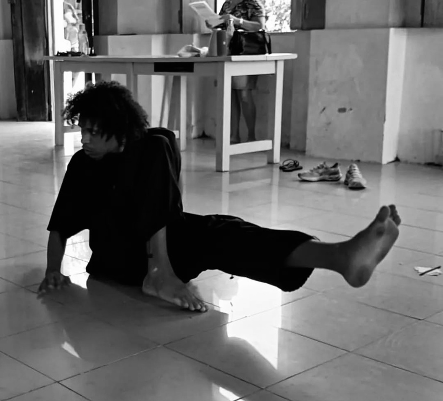

ATOR · ARTISTA CÊNICO · JOÃO PESSOA / PB
A arte de ser
e de sentir.
Rosberg — histórias que atravessam o corpo, a cena e o público.
PORTFÓLIO ARTÍSTICO
ROLE PARA EXPLORAR ↓
01 / QUEM SOU

O corpo também conta histórias.O palco é meu
lugar de encontro.
Sou ator, tenho 25 anos e sou natural de João Pessoa, Paraíba. Trabalho com o teatro há mais de oito anos, período em que venho construindo minha trajetória artística por meio da vivência constante no palco e da experimentação de diferentes linguagens cênicas.
Minha pesquisa como ator é movida pelo compromisso com a arte e pela busca de presença, verdade e comunicação direta com o público.
8+ANOS DE TEATRO
10EXPERIÊNCIAS CÊNICAS
PB · RJTRAJETÓRIA ARTÍSTICA
02 / APRENDIZADO CONTÍNUO
Formação artística.
Uma trajetória construída em encontros, experimentações e pesquisa cênica.
03 / EM CENA
Experiências cênicas.
Um percurso por diferentes histórias, linguagens e formas de presença.
✳
“Presença, verdade e comunicação direta com o público.”— MINHA PESQUISA COMO ATOR
04 / VAMOS CONVERSAR
Toda história começa
com um encontro.
Para convites, projetos, colaborações e novas possibilidades de criação, entre em contato.
Conversar no WhatsApp ↗
E-MAILrosbergxxx@gmail.com↗
WHATSAPP(21) 98581-5100↗
INSTAGRAM@roxsberg↗
LOCALIZAÇÃOJoão Pessoa, Paraíba · Brasil